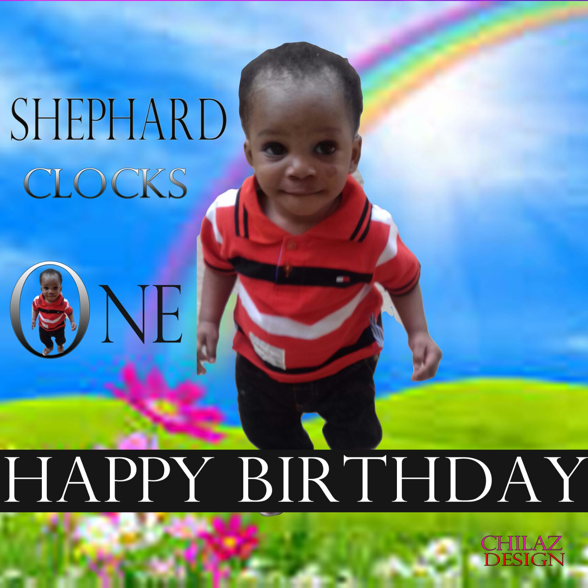
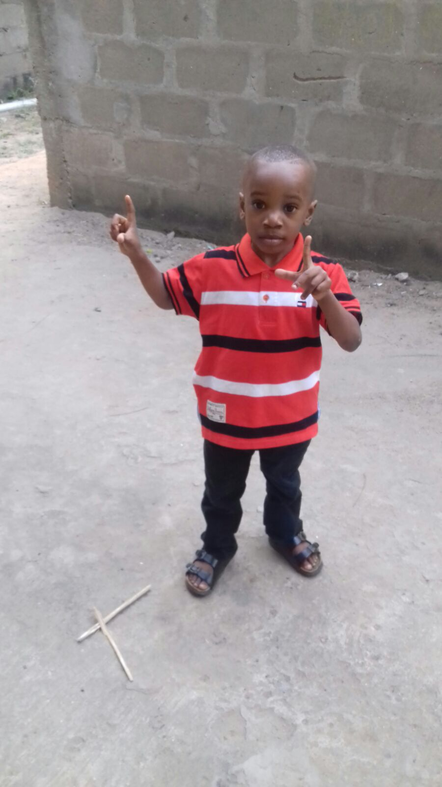

Dessert recept och förberedelse
Flourless Chocolate Cake I

Recipe by: Maggie
"A dense chocolate cake for those of us who can't tolerate wheat or gluten."
Flourless Chocolate Cake I

Recipe by: Maggie
"This flourless chocolate cake recipe with almonds is rich and fudgy and best of all, easy to make!"